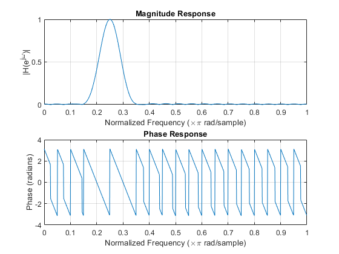
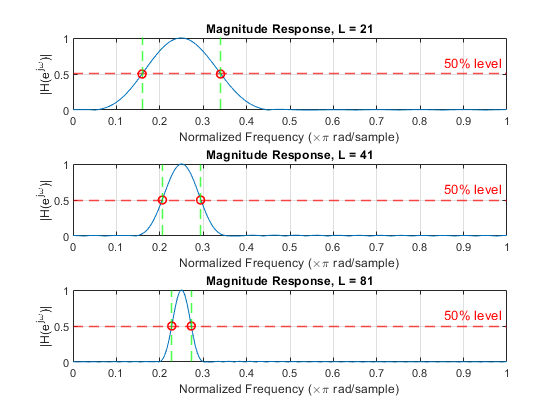

Contents
4.2 Part (a) Design L=41 filter and measure response
clear; close all; clc; % Define parameters L = 41; % filter length wc = 0.25*pi; % desired frequency n = 0:L-1; % time index % Computing the impulse response h[n] w_hamming = 0.54 - 0.46*cos(2*pi*n/(L-1)); %Hamming window shift = n - (L-1)/2; % time shift h = w_hamming .* cos(wc*shift); %bandpass impulse response % Normalize the filter coefficients h = h ./ max(abs(freqz(h,1,1024))); % Frequency response ( Magnitude & phase) with freqz [H,w] = freqz(h, 1, 1024); % H(e^jw) at 1024 frequency axis (0 to pi) magH = abs(H); phH = angle(H); % Plot magnitude and phase subplot(2, 1, 1); plot(w/pi, magH); grid on; title('Magnitude Response'); xlabel('Normalized Frequency (\times\pi rad/sample)'); ylabel('|H(e^{j\omega})|'); subplot(2, 1, 2); plot(w/pi, phH); grid on; title('Phase Response'); xlabel('Normalized Frequency (\times\pi rad/sample)'); ylabel('Phase (radians)'); % Find magnitude and phase at specific frequencies: omega_list = [0, 0.1*pi, 0.25*pi, 0.4*pi, 0.5*pi, 0.75*pi]; % Evaluate magnitude and phase at specified frequencies H_specific = freqz(h, 1, omega_list); magAtOmega = abs(H_specific); phAtOmega = angle(H_specific); % Store the results in a table resultsTable = table((omega_list'/pi), magAtOmega', phAtOmega', ... 'VariableNames', {'omega_over_pi', 'Magnitude', 'Phase_rad'}); disp(resultsTable); % For L = 41, the magnitude response shows a clear band centered at ω = 0.25π, % indicating that the Hamming BPF successfully passes the desired frequency component. % The filter exhibits strong attenuation at the other tested frequencies % (0, 0.1π, 0.4π, 0.5π, and 0.75π), with magnitude values near zero, % confirming that these lie in the stopband. % The Hamming window produces very small stopband ripples (<0.01), % consistent with the lab description. % The phase response is approximately linear in the passband, % as expected for a symmetric FIR filter.
omega_over_pi Magnitude Phase_rad
_____________ _________ _________
0 0.0073529 3.1416
0.1 0.0073529 -3.1416
0.25 1 3.1416
0.4 0.0073529 -3.1416
0.5 0.0073529 -3.1416
0.75 0.0073529 -3.1416
 4.2 Part (b) Passband width vs filter length (50% level)
wc = 0.25*pi; % desired center frequency L_list = [21, 41, 81]; % filter lengths to compare pb_low = zeros(size(L_list)); % lower passband edge (rad) pb_high = zeros(size(L_list)); % upper passband edge (rad) pb_width = zeros(size(L_list)); % passband width (rad) figure; % new figure for magnitude responses for i = 1:length(L_list) L = L_list(i); n = 0:L-1; % Designing Hamming bandpass filter for this L w_hamming = 0.54 - 0.46*cos(2*pi*n/(L-1)); % Hamming window shift = n - (L-1)/2; % center shift hL = w_hamming .* cos(wc*shift); % BPF impulse response % Normalized hL = hL ./ max(abs(freqz(hL,1,1024))); % Frequency response [HL, wL] = freqz(hL, 1, 1024); magHL = abs(HL); % 50% passband peak_mag = max(magHL); thresh = 0.5 * peak_mag; % 50% of peak idx_pass = find(magHL >= thresh); % indices in passband pb_low(i) = wL(idx_pass(1)); % lower edge (rad) pb_high(i) = wL(idx_pass(end)); % upper edge (rad) pb_width(i) = pb_high(i) - pb_low(i); % Plot magnitude response for this L subplot(3,1,i); plot(wL/pi, magHL); grid on; xlabel('Normalized Frequency (\times\pi rad/sample)'); ylabel('|H(e^{j\omega})|'); title(sprintf('Magnitude Response, L = %d', L)); hold on; yline(thresh, 'r--', '50% level', 'LineWidth', 1.2); plot([pb_low(i) pb_high(i)]/pi, [thresh thresh], 'ro', 'MarkerSize', 6, ... 'LineWidth', 1.2); % Vertical lines at passband edges xline(pb_low(i)/pi, 'g--', 'LineWidth', 1.2); xline(pb_high(i)/pi, 'g--', 'LineWidth', 1.2); end % Store the results in a table resultsB = table(L_list.', pb_low.'/pi, pb_high.'/pi, pb_width.'/pi, ... 'VariableNames', {'L', 'omega_low_over_pi', 'omega_high_over_pi', 'width_over_pi'}); disp('Passband Edges and Width for L = 21, 41, 81:'); disp(resultsB); % From the measured passband widths, we observe that the width of the % passband is inversely related to the filter length L. When L is % approximately doubled (e.g., from 41 to 81), the passband width is % roughly halved. When L is approximately halved (e.g., from 41 to 21), % the passband width roughly doubles. Thus, longer Hamming FIR filters % produce narrower passbands (better frequency selectivity), while % shorter filters produce wider passbands.
Passband Edges and Width for L = 21, 41, 81:
L omega_low_over_pi omega_high_over_pi width_over_pi
__ _________________ __________________ _____________
21 0.15918 0.33984 0.18066
41 0.20605 0.29395 0.087891
81 0.22754 0.27246 0.044922
 4.2(c) Output signal of the length-41 Hamming BPF (by hand summary)
The input to the L = 41 Hamming BPF is x[n] = 2 + 2*cos(0.1*pi*n + pi/3) + cos(0.25*pi*n - pi/3). Using the magnitude and phase from 4.2(a) we have, for this filter: H(0) ≈ 0.00735, ∠H(0) ≈ π (DC term, stopband) H(0.1π) ≈ 0.00735, ∠H(0.1π) ≈ -π (tone 1, stopband) H(0.25π) ≈ 1.0, ∠H(0.25π) = φ_c (tone 2, passband)
For an LTI system with frequency response H(e^{jω}), an input A*cos(ωn + φ) produces an output A|H(e^{jω})| * cos(ωn + φ + ∠H(e^{jω})).
Applying this to each term of x[n]: DC term (ω = 0): y0[n] = 2|H(0)|cos(0 + ∠H(0)) ≈ 2*0.00735*cos(π) ≈ -0.0147 → a very small negative constant (heavily attenuated).
Tone 1 (ω = 0.1π): y1[n] = 2|H(0.1π)|cos(0.1π*n + pi/3 + ∠H(0.1π)) ≈ 2*0.00735*cos(0.1π*n + (phase)) ≈ 0.0147*cos(0.1π*n + …) → very small amplitude, also in the stopband.
Tone 2 (ω = 0.25π): y2[n] = |H(0.25π)|cos(0.25π*n - pi/3 + ∠H(0.25π)) ≈ cos(0.25π*n - pi/3 + φ_c) → lies at the center of the passband and passes with gain ≈ 1.
Combining the contributions, the output can be written as y[n] = y0[n] + y1[n] + y2[n] y[n] ≈ -0.0147+0.0147 cos(0.1πn-2π/3)+ cos(0.25πn+2π/3) Thus, the output is dominated by the 0.25π sinusoid, while the DC and 0.1π components are almost completely suppressed because they lie in the stopband of the bandpass filter.
4.2(d) Why the L = 41 BPF passes ω = ±0.25π and rejects others
The frequency response of the length-41 Hamming BPF has a narrow passband centered at ω = 0.25π (and, by symmetry, at ω = -0.25π). From part (b), the 50% passband edges for L = 41 are approximately at ω_low/π ≈ 0.2067 and ω_high/π ≈ 0.294, so only frequencies in the interval [0.2067π, 0.294π] are passed with significant gain.
The input signal in part (c) contains components at ω = 0, 0.1π, and 0.25π. The components at 0 and 0.1π lie well outside the passband and therefore fall in the stopband where H(e^{jω}) is close to zero. These terms are strongly attenuated and appear in the output only as very small residuals.
In contrast, the component at ω = 0.25π lies at the center of the passband, where H(e^{j0.25π}) ≈ 1 and the phase response is roughly linear. As a result, this sinusoid is passed with almost no attenuation and only a phase shift determined by ∠H(e^{j0.25π}).
Because the passband of the L = 41 Hamming BPF is narrow and centered at ±0.25π, the filter is able to pass the components at ω = ±0.25π while reducing or rejecting all other frequency components of the input signal.